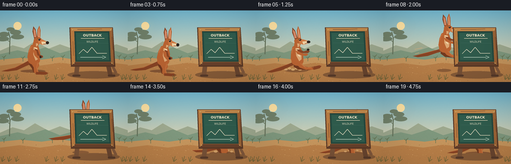
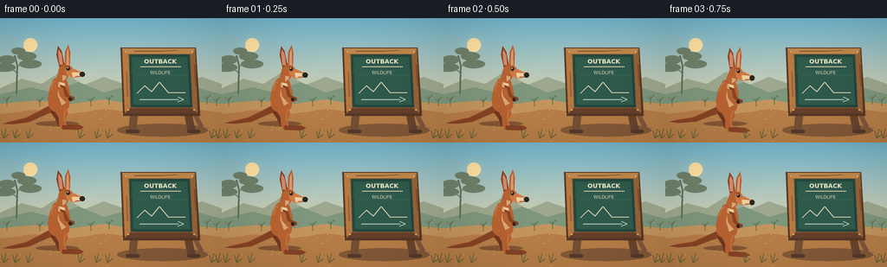

CODING AGENTS AS PIXEL WORLD MODELS
traex/GPT-5.6-Sol · dynamic_spatial_relationship_0034
点击播放 · 原生 RGB 像素
逐轮保存的候选
回放视频、检查图与代码变化。
每份候选均可单独播放。实际图片检查记录在下方工具轨迹中。
候选 01播放与检查图
点击播放 · 原生 RGB 像素


展开代码变化
--- 上一保存版本
+++ 本次保存版本
@@ -0,0 +1,315 @@
+from pathlib import Path
+import math
+import numpy as np
+from PIL import Image, ImageDraw, ImageFont, ImageFilter
+import artifact_io
+
+W, H, N = 256, 144, 20
+SS = 4
+RNG = np.random.default_rng(34)
+
+
+def C(hexstr):
+ hexstr = hexstr.lstrip('#')
+ return tuple(int(hexstr[i:i+2], 16) for i in (0, 2, 4))
+
+
+def sc(v): return int(round(v * SS))
+def box(b): return tuple(sc(v) for v in b)
+def pts(p): return [(sc(x), sc(y)) for x, y in p]
+
+
+def ellipse(d, b, fill, outline=None, width=1):
+ d.ellipse(box(b), fill=fill, outline=outline, width=sc(width) if outline else 1)
+
+
+def polygon(d, p, fill): d.polygon(pts(p), fill=fill)
+def line(d, p, fill, width=1, joint='curve'): d.line(pts(p), fill=fill, width=sc(width), joint=joint)
+
+
+def rounded(d, b, radius, fill, outline=None, width=1):
+ d.rounded_rectangle(box(b), radius=sc(radius), fill=fill, outline=outline,
+ width=sc(width) if outline else 1)
+
+
+def text(d, xy, s, font, fill, anchor=None, stroke_width=0, stroke_fill=None):
+ d.text((sc(xy[0]), sc(xy[1])), s, font=font, fill=fill, anchor=anchor,
+ stroke_width=sc(stroke_width), stroke_fill=stroke_fill)
+
+
+def font(size, bold=False):
+ p = '/usr/share/fonts/truetype/dejavu/DejaVuSans-Bold.ttf' if bold else '/usr/share/fonts/truetype/dejavu/DejaVuSans.ttf'
+ try: return ImageFont.truetype(p, sc(size))
+ except OSError: return ImageFont.load_default()
+
+
+def make_background():
+ hh, ww = H*SS, W*SS
+ arr = np.zeros((hh, ww, 3), dtype=np.uint8)
+ top = np.array(C('#74b9d1'), float)
+ mid = np.array(C('#d8d1b1'), float)
+ low = np.array(C('#efd0a0'), float)
+ for y in range(hh):
+ yy = y/(hh-1)
+ if yy < .64:
+ a = yy/.64
+ col = top*(1-a)+mid*a
+ else:
+ a = (yy-.64)/.36
+ col = mid*(1-a)+low*a
+ arr[y, :, :] = col.astype(np.uint8)
+ im = Image.fromarray(arr, 'RGB')
+ d = ImageDraw.Draw(im)
+ # Soft late-afternoon sun and halo.
+ halo = Image.new('RGBA', im.size, (0,0,0,0))
+ hd = ImageDraw.Draw(halo)
+ for r in range(23, 2, -1):
+ alpha = int(2 + 16*(1-r/23))
+ hd.ellipse(box((35-r, 31-r, 35+r, 31+r)), fill=(255,224,152,alpha))
+ halo = halo.filter(ImageFilter.GaussianBlur(sc(7)))
+ im = Image.alpha_composite(im.convert('RGBA'), halo).convert('RGB')
+ d = ImageDraw.Draw(im)
+ ellipse(d, (27,23,43,39), C('#ffe2a3'))
+ # Distant ranges and layered scrub.
+ polygon(d, [(0,81),(25,70),(48,76),(70,62),(97,77),(120,68),(151,79),(182,64),(210,76),(233,68),(256,76),(256,104),(0,104)], C('#9ea98f'))
+ polygon(d, [(0,88),(35,80),(57,85),(91,74),(120,86),(155,76),(188,87),(218,78),(256,88),(256,106),(0,106)], C('#7f987e'))
+ # Far eucalyptus at left and tiny shrubs.
+ line(d, [(19,88),(20,55),(17,43)], C('#66735c'), 2)
+ line(d, [(19,63),(10,56),(6,48)], C('#66735c'), 1)
+ line(d, [(19,57),(29,48),(33,41)], C('#66735c'), 1)
+ for cx,cy,rx,ry in [(8,48,10,5),(5,57,13,5),(31,44,11,5),(35,53,13,5),(21,38,8,4)]:
+ ellipse(d,(cx-rx,cy-ry,cx+rx,cy+ry),C('#71816a'))
+ # Ground layers.
+ polygon(d, [(0,99),(42,95),(83,99),(119,94),(164,101),(205,95),(256,99),(256,144),(0,144)], C('#c6965e'))
+ polygon(d, [(0,111),(39,106),(80,111),(121,105),(166,111),(214,104),(256,109),(256,144),(0,144)], C('#b98049'))
+ # Sand color variations.
+ for _ in range(210):
+ x = RNG.uniform(0,256); y = RNG.uniform(102,144)
+ r = RNG.choice([.25,.35,.5,.7])
+ col = tuple(RNG.choice([C('#9f6e42'),C('#d0a065'),C('#ae7948'),C('#dcac70')]).tolist())
+ ellipse(d,(x-r,y-r*.45,x+r,y+r*.45),col)
+ # Distant scrub silhouettes.
+ for x in [8,46,105,126,239,250]:
+ base=101+RNG.uniform(-2,2)
+ col=C('#667655')
+ line(d,[(x,base),(x,base-9)],col,1)
+ line(d,[(x,base-5),(x-4,base-9)],col,1)
+ line(d,[(x,base-6),(x+4,base-11)],col,1)
+ # Static subtle paper/film grain.
+ a=np.asarray(im).astype(np.int16)
+ noise=RNG.normal(0,0.7,a.shape[:2])[:,:,None]
+ a=np.clip(a+noise,0,255).astype(np.uint8)
+ return Image.fromarray(a,'RGB')
+
+BG = make_background()
+
+
+def local_transform(x0, y0, angle_deg, scale=1.0):
+ a=math.radians(angle_deg); ca,sa=math.cos(a),math.sin(a)
+ def p(x,y):
+ x*=scale; y*=scale
+ return (x0+x*ca-y*sa, y0+x*sa+y*ca)
+ return p
+
+
+def kangaroo(draw, x, y, phase, lean=0, scale=1.0):
+ """Draw a stylized red kangaroo around its pelvis. phase: stand/crouch/air/land."""
+ body=C('#b96332'); body_hi=C('#cf7b45'); body_dark=C('#884425')
+ fur_shadow=C('#73391f'); cream=C('#efd0a2'); cream2=C('#dca875')
+ black=C('#2e251f')
+ p=local_transform(x,y,lean,scale)
+
+ # Long counterbalancing tail (behind body), varied during the leap.
+ if phase == 'air':
+ tail=[p(-5,3),p(-18,6),p(-34,9),p(-52,12),p(-64,14),p(-54,17),p(-34,16),p(-15,11),p(2,8)]
+ elif phase == 'crouch':
+ tail=[p(-5,3),p(-20,10),p(-40,17),p(-59,20),p(-51,23),p(-31,21),p(-13,14),p(3,8)]
+ else:
+ tail=[p(-6,2),p(-20,9),p(-37,17),p(-57,21),p(-64,23),p(-52,24),p(-33,22),p(-14,14),p(3,8)]
+ polygon(draw,tail,body_dark)
+ line(draw,[tail[1],tail[2],tail[3]],C('#b75f33'),1)
+
+ # Far hind leg.
+ if phase == 'air':
+ far=[p(-6,4),p(-8,13),p(0,20),p(18,24),p(27,23),p(20,19),p(6,13),p(3,3)]
+ polygon(draw,far,fur_shadow)
+ polygon(draw,[p(15,20),p(29,21),p(34,19),p(28,25),p(18,25)],fur_shadow)
+ elif phase == 'crouch':
+ polygon(draw,[p(-5,3),p(-10,13),p(-2,20),p(12,21),p(18,18),p(9,17),p(2,10),p(5,2)],fur_shadow)
+ polygon(draw,[p(10,18),p(27,19),p(31,22),p(10,23)],fur_shadow)
+ else:
+ polygon(draw,[p(-6,2),p(-8,12),p(-3,19),p(0,28),p(8,29),p(8,24),p(4,16),p(5,5)],fur_shadow)
+ polygon(draw,[p(2,26),p(18,27),p(23,30),p(4,31)],fur_shadow)
+
+ # Main pear-shaped body.
+ bodypoly=[p(-9,4),p(-11,-4),p(-8,-17),p(-3,-27),p(5,-30),p(12,-24),p(15,-12),p(14,1),p(8,10),p(-2,11)]
+ polygon(draw,bodypoly,body)
+ # back/rump volume and warm rim light
+ ellipse(draw,(x-10*scale,y-7*scale,x+14*scale,y+12*scale),body)
+ line(draw,[p(-7,-14),p(-4,-23),p(3,-27)],body_hi,1)
+ polygon(draw,[p(2,-24),p(9,-22),p(12,-10),p(10,1),p(5,4),p(1,-8)],cream2)
+ polygon(draw,[p(4,-23),p(9,-21),p(10,-12),p(8,-4),p(4,-8)],cream)
+
+ # Near powerful hind leg.
+ if phase == 'air':
+ polygon(draw,[p(2,4),p(9,7),p(11,15),p(19,19),p(33,20),p(37,23),p(31,26),p(15,23),p(4,17),p(-1,10)],body)
+ polygon(draw,[p(27,20),p(43,19),p(47,21),p(43,25),p(31,26)],body_dark)
+ line(draw,[p(7,9),p(15,19),p(31,22)],body_hi,1)
+ elif phase == 'crouch':
+ polygon(draw,[p(1,3),p(11,7),p(14,14),p(10,19),p(25,19),p(31,22),p(24,25),p(7,24),p(0,18),p(-2,9)],body)
+ polygon(draw,[p(21,19),p(36,20),p(40,23),p(35,26),p(23,25)],body_dark)
+ else:
+ polygon(draw,[p(1,3),p(10,6),p(12,14),p(8,20),p(10,28),p(5,31),p(1,27),p(1,18),p(-3,11)],body)
+ polygon(draw,[p(5,27),p(24,27),p(30,30),p(24,33),p(5,32)],body_dark)
+ line(draw,[p(9,8),p(7,18),p(9,27)],body_hi,1)
+
+ # Neck.
+ polygon(draw,[p(-1,-24),p(3,-37),p(11,-41),p(16,-33),p(9,-22)],body)
+ polygon(draw,[p(7,-37),p(12,-38),p(11,-27),p(7,-24)],cream2)
+
+ # Arms: compact when standing, reaching forward in flight.
+ if phase == 'air':
+ polygon(draw,[p(4,-20),p(10,-19),p(17,-14),p(27,-15),p(29,-12),p(25,-9),p(15,-11),p(7,-14)],body_dark)
+ ellipse(draw,(p(26,-16)[0]-2*scale,p(26,-16)[1]-2*scale,p(26,-16)[0]+3*scale,p(26,-16)[1]+2*scale),black)
+ polygon(draw,[p(1,-18),p(7,-16),p(14,-10),p(23,-9),p(25,-6),p(20,-4),p(11,-7),p(4,-11)],body)
+ else:
+ polygon(draw,[p(4,-20),p(10,-18),p(13,-8),p(20,-5),p(20,-2),p(15,0),p(8,-7),p(5,-13)],body_dark)
+ polygon(draw,[p(1,-18),p(7,-16),p(9,-7),p(15,-3),p(14,1),p(9,0),p(3,-7)],body)
+ ellipse(draw,(p(15,-3)[0]-2*scale,p(15,-3)[1]-2*scale,p(15,-3)[0]+2*scale,p(15,-3)[1]+2*scale),black)
+
+ # Tall ears behind head.
+ left=[p(4,-40),p(1,-55),p(3,-65),p(7,-59),p(10,-42)]
+ right=[p(10,-41),p(11,-58),p(15,-66),p(17,-57),p(16,-40)]
+ polygon(draw,left,body_dark); polygon(draw,right,body)
+ polygon(draw,[p(4,-43),p(3,-57),p(4,-61),p(7,-55),p(8,-43)],C('#d68a68'))
+ polygon(draw,[p(12,-43),p(13,-58),p(15,-62),p(15,-55),p(15,-42)],C('#e09a73'))
+
+ # Head and long muzzle.
+ ellipse(draw,(p(3,-43)[0],p(3,-43)[1],p(19,-30)[0],p(19,-30)[1]),body)
+ polygon(draw,[p(11,-39),p(20,-38),p(30,-33),p(29,-28),p(19,-27),p(12,-31)],body_hi)
+ polygon(draw,[p(18,-34),p(30,-33),p(29,-28),p(19,-28)],cream)
+ ellipse(draw,(p(27,-34)[0],p(27,-34)[1],p(33,-28)[0],p(33,-28)[1]),black)
+ # Eye and brow.
+ ellipse(draw,(p(12,-40)[0],p(12,-40)[1],p(16,-36)[0],p(16,-36)[1]),black)
+ ellipse(draw,(p(13,-39.7)[0],p(13,-39.7)[1],p(14,-38.5)[0],p(14,-38.5)[1]),C('#fff4d2'))
+ line(draw,[p(10,-41),p(16,-41)],body_dark,1)
+ line(draw,[p(22,-29),p(28,-29)],C('#7a3e2b'),1)
+
+
+def draw_board(draw):
+ # Ground cast shadow.
+ ellipse(draw,(135,122,240,137),C('#865b38'))
+ # Splayed timber legs and feet.
+ polygon(draw,[(151,104),(160,104),(157,132),(148,132)],C('#765036'))
+ polygon(draw,[(211,104),(220,104),(226,132),(217,132)],C('#69452f'))
+ rounded(draw,(145,129,161,133),2,C('#573a2a'))
+ rounded(draw,(216,129,231,133),2,C('#573a2a'))
+ # A-frame support behind board.
+ polygon(draw,[(214,95),(220,96),(235,125),(230,127)],C('#81583b'))
+ # Main timber surround, very slight perspective.
+ polygon(draw,[(139,34),(226,34),(231,113),(142,113)],C('#5a3927'))
+ polygon(draw,[(141,35),(225,35),(228,110),(144,110)],C('#9a6336'))
+ # Golden top/left edge and dark lower edge produce depth.
+ polygon(draw,[(141,35),(225,35),(222,41),(147,41)],C('#c28a4d'))
+ polygon(draw,[(141,35),(148,41),(150,105),(144,110)],C('#b77a41'))
+ polygon(draw,[(144,110),(228,110),(221,104),(150,104)],C('#68412b'))
+ # Blackboard inset.
+ polygon(draw,[(149,42),(219,42),(222,103),(151,103)],C('#24483f'))
+ polygon(draw,[(152,45),(216,45),(219,100),(154,100)],C('#2f5b4c'))
+ # Subtle erased-chalk bands.
+ for y,alpha in [(50,0),(65,1),(82,2),(95,3)]:
+ col=[C('#355f52'),C('#396456'),C('#33594d'),C('#3d6256')][alpha]
+ line(draw,[(155,y),(217,y+1)],col,1)
+ # Chalk title and simple diagrams.
+ f1=font(7,bold=True); f2=font(5,bold=False)
+ text(draw,(185,50),'OUTBACK',f1,C('#f1e6c7'),anchor='mm')
+ line(draw,[(162,56),(209,56)],C('#d6cdaF'),1)
+ text(draw,(185,63),'WILDLIFE',f2,C('#ddd8bc'),anchor='mm')
+ # chalk landscape / arrow markings
+ line(draw,[(158,87),(167,78),(175,85),(184,74),(194,86),(214,86)],C('#d9d3b7'),1)
+ line(draw,[(161,94),(206,94)],C('#b7cfbd'),1)
+ line(draw,[(205,91),(212,94),(205,97)],C('#b7cfbd'),1)
+ # Tiny pins / joinery.
+ for xx,yy in [(145,39),(222,39),(148,106),(224,106)]: ellipse(draw,(xx-1,yy-1,xx+1,yy+1),C('#d6ae66'))
+ # Wood grain.
+ line(draw,[(155,38),(186,38),(204,37)],C('#80502f'),1)
+ line(draw,[(146,62),(147,91)],C('#855432'),1)
+ line(draw,[(224,53),(226,79)],C('#6e452d'),1)
+
+
+def motion(i):
+ if i <= 2:
+ return 66 + .7*math.sin(i*1.4), 97 + .4*math.sin(i*1.1), 'stand', -2+math.sin(i)*1.1, 1.0
+ if i == 3:
+ return 69, 99, 'stand', 2, 1.0
+ if i == 4:
+ return 75, 104, 'crouch', 10, .98
+ if 5 <= i <= 13:
+ t=(i-5)/8
+ x=82 + 106*t
+ y=99 - 29*math.sin(math.pi*t) + 2*t
+ lean=-10 + 15*t
+ return x,y,'air',lean,1.0
+ if i == 14:
+ return 189,103,'crouch',6,.98
+ if i == 15:
+ return 190,100,'stand',1,.98
+ return 190,98 + .35*math.sin(i), 'stand', -1, .98
+
+
+def render_frame(i):
+ im=BG.copy()
+ d=ImageDraw.Draw(im)
+ x,y,phase,lean,k=motion(i)
+ # Moving ground shadow compresses during airborne frames.
+ if phase=='air':
+ height=max(0,99-y)
+ rw=max(8,23-height*.34)
+ shade=C('#8c5d38')
+ ellipse(d,(x-rw,119-rw*.10,x+rw,122+rw*.10),shade)
+ else:
+ ellipse(d,(x-25,119,x+25,125),C('#865735'))
+ # Takeoff / landing dust clouds sit behind the animal and sign.
+ if 4 <= i <= 7:
+ q=i-4
+ for j in range(5):
+ cx=63+j*7-q*2; cy=119-j%2*2-q*.3
+ rr=2.8+q*.6+j*.12
+ ellipse(d,(cx-rr,cy-rr*.55,cx+rr,cy+rr*.55),C('#d5a66d'))
+ if 13 <= i <= 16:
+ q=i-13
+ for j in range(5):
+ cx=174+j*8+q*2; cy=119-(j%2)*2-q*.2
+ rr=max(1.5,4.2-q*.5-j*.15)
+ ellipse(d,(cx-rr,cy-rr*.55,cx+rr,cy+rr*.55),C('#d2a068'))
+ # A few restrained motion strokes near the launch, also behind subject.
+ if 6 <= i <= 9:
+ off=i-6
+ line(d,[(45+off*9,84-off*3),(60+off*9,81-off*3)],C('#d9ad7c'),1)
+ line(d,[(48+off*8,91-off*2),(56+off*8,89-off*2)],C('#d9ad7c'),1)
+ kangaroo(d,x,y,phase,lean,k)
+ # The sign is deliberately composited after the kangaroo: overlap means behind.
+ draw_board(d)
+ # sparse sharp foreground grass
+ for gx in [4,17,32,92,111,124,244,251]:
+ col=C('#6e6639')
+ line(d,[(gx,139),(gx-2,130)],col,1)
+ line(d,[(gx,139),(gx+3,128)],col,1)
+ line(d,[(gx,139),(gx+6,134)],col,1)
+ # warm edge vignette, kept very subtle
+ arr=np.asarray(im).astype(np.float32)
+ yy,xx=np.mgrid[0:H*SS,0:W*SS]
+ nx=(xx-W*SS/2)/(W*SS/2); ny=(yy-H*SS/2)/(H*SS/2)
+ vig=np.clip(1-.065*(nx*nx+ny*ny),.88,1)[:,:,None]
+ arr=np.clip(arr*vig,0,255).astype(np.uint8)
+ im=Image.fromarray(arr).resize((W,H),Image.Resampling.LANCZOS)
+ return np.asarray(im.convert('RGB'),dtype=np.uint8)
+
+
+def main():
+ frames=np.stack([render_frame(i) for i in range(N)],axis=0)
+ assert frames.shape==(N,H,W,3) and frames.dtype==np.uint8
+ artifact_io.save(frames,Path(__file__).resolve().parent)
+
+if __name__=='__main__':
+ main()
可观测工具轨迹
实际执行的命令与返回图片。
命令 1exit 0
/bin/bash -lc "cat prompt.txt && printf '\\n--- GENERATION_RULES.md ---\\n' && cat GENERATION_RULES.md"
命令 2exit 0
/bin/bash -lc "cat task_spec.json && printf '\\n--- files ---\\n' && find . -maxdepth 2 -type f -printf '%p\\n' | sort"
命令 3exit 0
/bin/bash -lc "which ffmpeg || true; which python3 || true; python3 - <<'PY' mods=['PIL','numpy','cv2','imageio','matplotlib'] for m in mods: try: x=__import__(m); print(m,'OK',getattr(x,'__version__','')) except Exception as e: print(m,'NO',e) PY"
命令 4exit 0
/bin/bash -lc 'cat artifact_io.py'
命令 5exit 1
/bin/bash -lc "cat > generate.py <<'PY'
from pathlib import Path
import math
import numpy as np
from PIL import Image, ImageDraw, ImageFont, ImageFilter
import artifact_io
W, H, N = 256, 144, 20
SS = 4
RNG = np.random.default_rng(34)
def C(hexstr):
hexstr = hexstr.lstrip('#')
return tuple(int(hexstr[i:i+2], 16) for i in (0, 2, 4))
def sc(v): return int(round(v * SS))
def box(b): return tuple(sc(v) for v in b)
def pts(p): return [(sc(x), sc(y)) for x, y in p]
def ellipse(d, b, fill, outline=None, width=1):
d.ellipse(box(b), fill=fill, outline=outline, width=sc(width) if outline else 1)
def polygon(d, p, fill): d.polygon(pts(p), fill=fill)
def line(d, p, fill, width=1, joint='curve'): d.line(pts(p), fill=fill, width=sc(width), joint=joint)
def rounded(d, b, radius, fill, outline=None, width=1):
d.rounded_rectangle(box(b), radius=sc(radius), fill=fill, outline=outline,
width=sc(width) if outline else 1)
def text(d, xy, s, font, fill, anchor=None, stroke_width=0, stroke_fill=None):
d.text((sc(xy[0]), sc(xy[1])), s, font=font, fill=fill, anchor=anchor,
stroke_width=sc(stroke_width), stroke_fill=stroke_fill)
def font(size, bold=False):
p = '/usr/share/fonts/truetype/dejavu/DejaVuSans-Bold.ttf' if bold else '/usr/share/fonts/truetype/dejavu/DejaVuSans.ttf'
try: return ImageFont.truetype(p, sc(size))
except OSError: return ImageFont.load_default()
def make_background():
hh, ww = H*SS, W*SS
arr = np.zeros((hh, ww, 3), dtype=np.uint8)
top = np.array(C('#74b9d1'), float)
mid = np.array(C('#d8d1b1'), float)
low = np.array(C('#efd0a0'), float)
for y in range(hh):
yy = y/(hh-1)
if yy < .64:
a = yy/.64
col = top*(1-a)+mid*a
else:
a = (yy-.64)/.36
col = mid*(1-a)+low*a
arr[y, :, :] = col.astype(np.uint8)
im = Image.fromarray(arr, 'RGB')
d = ImageDraw.Draw(im)
# Soft late-afternoon sun and halo.
halo = Image.new('RGBA', im.size, (0,0,0,0))
hd = ImageDraw.Draw(halo)
for r in range(23, 2, -1):
alpha = int(2 + 16*(1-r/23))
hd.ellipse(box((35-r, 31-r, 35+r, 31+r)), fill=(255,224,152,alpha))
halo = halo.filter(ImageFilter.GaussianBlur(sc(7)))
im = Image.alpha_composite(im.convert('RGBA'), halo).convert('RGB')
d = ImageDraw.Draw(im)
ellipse(d, (27,23,43,39), C('#ffe2a3'))
# Distant ranges and layered scrub.
polygon(d, [(0,81),(25,70),(48,76),(70,62),(97,77),(120,68),(151,79),(182,64),(210,76),(233,68),(256,76),(256,104),(0,104)], C('#9ea98f'))
polygon(d, [(0,88),(35,80),(57,85),(91,74),(120,86),(155,76),(188,87),(218,78),(256,88),(256,106),(0,106)], C('#7f987e'))
# Far eucalyptus at left and tiny shrubs.
line(d, [(19,88),(20,55),(17,43)], C('#66735c'), 2)
line(d, [(19,63),(10,56),(6,48)], C('#66735c'), 1)
line(d, [(19,57),(29,48),(33,41)], C('#66735c'), 1)
for cx,cy,rx,ry in [(8,48,10,5),(5,57,13,5),(31,44,11,5),(35,53,13,5),(21,38,8,4)]:
ellipse(d,(cx-rx,cy-ry,cx+rx,cy+ry),C('#71816a'))
# Ground layers.
polygon(d, [(0,99),(42,95),(83,99),(119,94),(164,101),(205,95),(256,99),(256,144),(0,144)], C('#c6965e'))
polygon(d, [(0,111),(39,106),(80,111),(121,105),(166,111),(214,104),(256,109),(256,144),(0,144)], C('#b98049'))
# Sand color variations.
for _ in range(210):
x = RNG.uniform(0,256); y = RNG.uniform(102,144)
r = RNG.choice([.25,.35,.5,.7])
col = RNG.choice([C('#9f6e42'),C('#d0a065'),C('#ae7948'),C('#dcac70')])
ellipse(d,(x-r,y-r*.45,x+r,y+r*.45),col)
# Distant scrub silhouettes.
for x in [8,46,105,126,239,250]:
base=101+RNG.uniform(-2,2)
col=C('#667655')
line(d,[(x,base),(x,base-9)],col,1)
line(d,[(x,base-5),(x-4,base-9)],col,1)
line(d,[(x,base-6),(x+4,base-11)],col,1)
# Static subtle paper/film grain.
a=np.asarray(im).astype(np.int16)
noise=RNG.normal(0,0.7,a.shape[:2])[:,:,None]
a=np.clip(a+noise,0,255).astype(np.uint8)
return Image.fromarray(a,'RGB')
BG = make_background()
def local_transform(x0, y0, angle_deg, scale=1.0):
a=math.radians(angle_deg); ca,sa=math.cos(a),math.sin(a)
def p(x,y):
x*=scale; y*=scale
return (x0+x*ca-y*sa, y0+x*sa+y*ca)
return p
def kangaroo(draw, x, y, phase, lean=0, scale=1.0):
\"\"\"Draw a stylized red kangaroo around its pelvis. phase: stand/crouch/air/land.\"\"\"
body=C('#b96332'); body_hi=C('#cf7b45'); body_dark=C('#884425')
fur_shadow=C('#73391f'); cream=C('#efd0a2'); cream2=C('#dca875')
black=C('#2e251f')
p=local_transform(x,y,lean,scale)
# Long counterbalancing tail (behind body), varied during the leap.
if phase == 'air':
tail=[p(-5,3),p(-18,6),p(-34,9),p(-52,12),p(-64,14),p(-54,17),p(-34,16),p(-15,11),p(2,8)]
elif phase == 'crouch':
tail=[p(-5,3),p(-20,10),p(-40,17),p(-59,20),p(-51,23),p(-31,21),p(-13,14),p(3,8)]
else:
tail=[p(-6,2),p(-20,9),p(-37,17),p(-57,21),p(-64,23),p(-52,24),p(-33,22),p(-14,14),p(3,8)]
polygon(draw,tail,body_dark)
line(draw,[tail[1],tail[2],tail[3]],C('#b75f33'),1)
# Far hind leg.
if phase == 'air':
far=[p(-6,4),p(-8,13),p(0,20),p(18,24),p(27,23),p(20,19),p(6,13),p(3,3)]
polygon(draw,far,fur_shadow)
polygon(draw,[p(15,20),p(29,21),p(34,19),p(28,25),p(18,25)],fur_shadow)
elif phase == 'crouch':
polygon(draw,[p(-5,3),p(-10,13),p(-2,20),p(12,21),p(18,18),p(9,17),p(2,10),p(5,2)],fur_shadow)
polygon(draw,[p(10,18),p(27,19),p(31,22),p(10,23)],fur_shadow)
else:
polygon(draw,[p(-6,2),p(-8,12),p(-3,19),p(0,28),p(8,29),p(8,24),p(4,16),p(5,5)],fur_shadow)
polygon(draw,[p(2,26),p(18,27),p(23,30),p(4,31)],fur_shadow)
# Main pear-shaped body.
bodypoly=[p(-9,4),p(-11,-4),p(-8,-17),p(-3,-27),p(5,-30),p(12,-24),p(15,-12),p(14,1),p(8,10),p(-2,11)]
polygon(draw,bodypoly,body)
# back/rump volume and warm rim light
ellipse(draw,(x-10*scale,y-7*scale,x+14*scale,y+12*scale),body)
line(draw,[p(-7,-14),p(-4,-23),p(3,-27)],body_hi,1)
polygon(draw,[p(2,-24),p(9,-22),p(12,-10),p(10,1),p(5,4),p(1,-8)],cream2)
polygon(draw,[p(4,-23),p(9,-21),p(10,-12),p(8,-4),p(4,-8)],cream)
# Near powerful hind leg.
if phase == 'air':
polygon(draw,[p(2,4),p(9,7),p(11,15),p(19,19),p(33,20),p(37,23),p(31,26),p(15,23),p(4,17),p(-1,10)],body)
polygon(draw,[p(27,20),p(43,19),p(47,21),p(43,25),p(31,26)],body_dark)
line(draw,[p(7,9),p(15,19),p(31,22)],body_hi,1)
elif phase == 'crouch':
polygon(draw,[p(1,3),p(11,7),p(14,14),p(10,19),p(25,19),p(31,22),p(24,25),p(7,24),p(0,18),p(-2,9)],body)
polygon(draw,[p(21,19),p(36,20),p(40,23),p(35,26),p(23,25)],body_dark)
else:
polygon(draw,[p(1,3),p(10,6),p(12,14),p(8,20),p(10,28),p(5,31),p(1,27),p(1,18),p(-3,11)],body)
polygon(draw,[p(5,27),p(24,27),p(30,30),p(24,33),p(5,32)],body_dark)
line(draw,[p(9,8),p(7,18),p(9,27)],body_hi,1)
# Neck.
polygon(draw,[p(-1,-24),p(3,-37),p(11,-41),p(16,-33),p(9,-22)],body)
polygon(draw,[p(7,-37),p(12,-38),p(11,-27),p(7,-24)],cream2)
# Arms: compact when standing, reaching forward in flight.
if phase == 'air':
polygon(draw,[p(4,-20),p(10,-19),p(17,-14),p(27,-15),p(29,-12),p(25,-9),p(15,-11),p(7,-14)],body_dark)
ellipse(draw,(p(26,-16)[0]-2*scale,p(26,-16)[1]-2*scale,p(26,-16)[0]+3*scale,p(26,-16)[1]+2*scale),black)
polygon(draw,[p(1,-18),p(7,-16),p(14,-10),p(23,-9),p(25,-6),p(20,-4),p(11,-7),p(4,-11)],body)
else:
polygon(draw,[p(4,-20),p(10,-18),p(13,-8),p(20,-5),p(20,-2),p(15,0),p(8,-7),p(5,-13)],body_dark)
polygon(draw,[p(1,-18),p(7,-16),p(9,-7),p(15,-3),p(14,1),p(9,0),p(3,-7)],body)
ellipse(draw,(p(15,-3)[0]-2*scale,p(15,-3)[1]-2*scale,p(15,-3)[0]+2*scale,p(15,-3)[1]+2*scale),black)
# Tall ears behind head.
left=[p(4,-40),p(1,-55),p(3,-65),p(7,-59),p(10,-42)]
right=[p(10,-41),p(11,-58),p(15,-66),p(17,-57),p(16,-40)]
polygon(draw,left,body_dark); polygon(draw,right,body)
polygon(draw,[p(4,-43),p(3,-57),p(4,-61),p(7,-55),p(8,-43)],C('#d68a68'))
polygon(draw,[p(12,-43),p(13,-58),p(15,-62),p(15,-55),p(15,-42)],C('#e09a73'))
# Head and long muzzle.
ellipse(draw,(p(3,-43)[0],p(3,-43)[1],p(19,-30)[0],p(19,-30)[1]),body)
polygon(draw,[p(11,-39),p(20,-38),p(30,-33),p(29,-28),p(19,-27),p(12,-31)],body_hi)
polygon(draw,[p(18,-34),p(30,-33),p(29,-28),p(19,-28)],cream)
ellipse(draw,(p(27,-34)[0],p(27,-34)[1],p(33,-28)[0],p(33,-28)[1]),black)
# Eye and brow.
ellipse(draw,(p(12,-40)[0],p(12,-40)[1],p(16,-36)[0],p(16,-36)[1]),black)
ellipse(draw,(p(13,-39.7)[0],p(13,-39.7)[1],p(14,-38.5)[0],p(14,-38.5)[1]),C('#fff4d2'))
line(draw,[p(10,-41),p(16,-41)],body_dark,1)
line(draw,[p(22,-29),p(28,-29)],C('#7a3e2b'),1)
def draw_board(draw):
# Ground cast shadow.
ellipse(draw,(135,122,240,137),C('#865b38'))
# Splayed timber legs and feet.
polygon(draw,[(151,104),(160,104),(157,132),(148,132)],C('#765036'))
polygon(draw,[(211,104),(220,104),(226,132),(217,132)],C('#69452f'))
rounded(draw,(145,129,161,133),2,C('#573a2a'))
rounded(draw,(216,129,231,133),2,C('#573a2a'))
# A-frame support behind board.
polygon(draw,[(214,95),(220,96),(235,125),(230,127)],C('#81583b'))
# Main timber surround, very slight perspective.
polygon(draw,[(139,34),(226,34),(231,113),(142,113)],C('#5a3927'))
polygon(draw,[(141,35),(225,35),(228,110),(144,110)],C('#9a6336'))
# Golden top/left edge and dark lower edge produce depth.
polygon(draw,[(141,35),(225,35),(222,41),(147,41)],C('#c28a4d'))
polygon(draw,[(141,35),(148,41),(150,105),(144,110)],C('#b77a41'))
polygon(draw,[(144,110),(228,110),(221,104),(150,104)],C('#68412b'))
# Blackboard inset.
polygon(draw,[(149,42),(219,42),(222,103),(151,103)],C('#24483f'))
polygon(draw,[(152,45),(216,45),(219,100),(154,100)],C('#2f5b4c'))
# Subtle erased-chalk bands.
for y,alpha in [(50,0),(65,1),(82,2),(95,3)]:
col=[C('#355f52'),C('#396456'),C('#33594d'),C('#3d6256')][alpha]
line(draw,[(155,y),(217,y+1)],col,1)
# Chalk title and simple diagrams.
f1=font(7,bold=True); f2=font(5,bold=False)
text(draw,(185,50),'OUTBACK',f1,C('#f1e6c7'),anchor='mm')
line(draw,[(162,56),(209,56)],C('#d6cdaF'),1)
text(draw,(185,63),'WILDLIFE',f2,C('#ddd8bc'),anchor='mm')
# chalk landscape / arrow markings
line(draw,[(158,87),(167,78),(175,85),(184,74),(194,86),(214,86)],C('#d9d3b7'),1)
line(draw,[(161,94),(206,94)],C('#b7cfbd'),1)
line(draw,[(205,91),(212,94),(205,97)],C('#b7cfbd'),1)
# Tiny pins / joinery.
for xx,yy in [(145,39),(222,39),(148,106),(224,106)]: ellipse(draw,(xx-1,yy-1,xx+1,yy+1),C('#d6ae66'))
# Wood grain.
line(draw,[(155,38),(186,38),(204,37)],C('#80502f'),1)
line(draw,[(146,62),(147,91)],C('#855432'),1)
line(draw,[(224,53),(226,79)],C('#6e452d'),1)
def motion(i):
if i <= 2:
return 66 + .7*math.sin(i*1.4), 97 + .4*math.sin(i*1.1), 'stand', -2+math.sin(i)*1.1, 1.0
if i == 3:
return 69, 99, 'stand', 2, 1.0
if i == 4:
return 75, 104, 'crouch', 10, .98
if 5 <= i <= 13:
t=(i-5)/8
x=82 + 106*t
y=99 - 29*math.sin(math.pi*t) + 2*t
lean=-10 + 15*t
return x,y,'air',lean,1.0
if i == 14:
return 189,103,'crouch',6,.98
if i == 15:
return 190,100,'stand',1,.98
return 190,98 + .35*math.sin(i), 'stand', -1, .98
def render_frame(i):
im=BG.copy()
d=ImageDraw.Draw(im)
x,y,phase,lean,k=motion(i)
# Moving ground shadow compresses during airborne frames.
if phase=='air':
height=max(0,99-y)
rw=max(8,23-height*.34)
shade=C('#8c5d38')
ellipse(d,(x-rw,119-rw*.10,x+rw,122+rw*.10),shade)
else:
ellipse(d,(x-25,119,x+25,125),C('#865735'))
# Takeoff / landing dust clouds sit behind the animal and sign.
if 4 <= i <= 7:
q=i-4
for j in range(5):
cx=63+j*7-q*2; cy=119-j%2*2-q*.3
rr=2.8+q*.6+j*.12
ellipse(d,(cx-rr,cy-rr*.55,cx+rr,cy+rr*.55),C('#d5a66d'))
if 13 <= i <= 16:
q=i-13
for j in range(5):
cx=174+j*8+q*2; cy=119-(j%2)*2-q*.2
rr=max(1.5,4.2-q*.5-j*.15)
ellipse(d,(cx-rr,cy-rr*.55,cx+rr,cy+rr*.55),C('#d2a068'))
# A few restrained motion strokes near the launch, also behind subject.
if 6 <= i <= 9:
off=i-6
line(d,[(45+off*9,84-off*3),(60+off*9,81-off*3)],C('#d9ad7c'),1)
line(d,[(48+off*8,91-off*2),(56+off*8,89-off*2)],C('#d9ad7c'),1)
kangaroo(d,x,y,phase,lean,k)
# The sign is deliberately composited after the kangaroo: overlap means behind.
draw_board(d)
# sparse sharp foreground grass
for gx in [4,17,32,92,111,124,244,251]:
col=C('#6e6639')
line(d,[(gx,139),(gx-2,130)],col,1)
line(d,[(gx,139),(gx+3,128)],col,1)
line(d,[(gx,139),(gx+6,134)],col,1)
# warm edge vignette, kept very subtle
arr=np.asarray(im).astype(np.float32)
yy,xx=np.mgrid[0:H*SS,0:W*SS]
nx=(xx-W*SS/2)/(W*SS/2); ny=(yy-H*SS/2)/(H*SS/2)
vig=np.clip(1-.065*(nx*nx+ny*ny),.88,1)[:,:,None]
arr=np.clip(arr*vig,0,255).astype(np.uint8)
im=Image.fromarray(arr).resize((W,H),Image.Resampling.LANCZOS)
return np.asarray(im.convert('RGB'),dtype=np.uint8)
def main():
frames=np.stack([render_frame(i) for i in range(N)],axis=0)
assert frames.shape==(N,H,W,3) and frames.dtype==np.uint8
artifact_io.save(frames,Path(__file__).resolve().parent)
if __name__=='__main__':
main()
PY
python3 generate.py
python3 - <<'PY'
import numpy as np
from PIL import Image
z=np.load('pixels.npz')['pixels']
print('pixels',z.shape,z.dtype,'range',z.min(),z.max())
print('frames',len(list(__import__('pathlib').Path('frames').glob('*.png'))))
print('inspection',Image.open('inspection.png').size)
PY"命令 6exit 0
/bin/bash -lc "python3 generate.py && python3 - <<'PY'
import numpy as np
from PIL import Image
from pathlib import Path
z=np.load('pixels.npz')['pixels']
print('pixels',z.shape,z.dtype,'range',z.min(),z.max())
print('frames',len(list(Path('frames').glob('*.png'))))
print('inspection',Image.open('inspection.png').size)
PY"命令 7exit 0
/bin/bash -lc 'which chafa || which viu || which jp2 || which img2txt || which python3'
命令 8exit 0
/bin/bash -lc 'python3 -m py_compile generate.py artifact_io.py && ls -lh pixels.npz inspection.png transition_check.png index.html frames/{00,04,08,12,16,19}.png'命令 9exit 0
/bin/bash -lc "python3 - <<'PY'
from PIL import Image
import numpy as np
from pathlib import Path
ims=[np.array(Image.open(f'frames/{i:02}.png')) for i in range(20)]
for i,a in enumerate(ims):
d=np.abs(a.astype(int)-ims[0].astype(int)).mean()
step=0 if i==0 else np.abs(a.astype(int)-ims[i-1].astype(int)).mean()
print(f'{i:02d} mean={a.mean():6.2f} from0={d:6.2f} step={step:6.2f}')
print('all RGB',all(Image.open(p).mode=='RGB' for p in Path('frames').glob('*.png')))
PY"保存候选 1 份；完成命令 9 次；可验证图片返回 0 张。原始 API 响应与完整日志保留在本地。